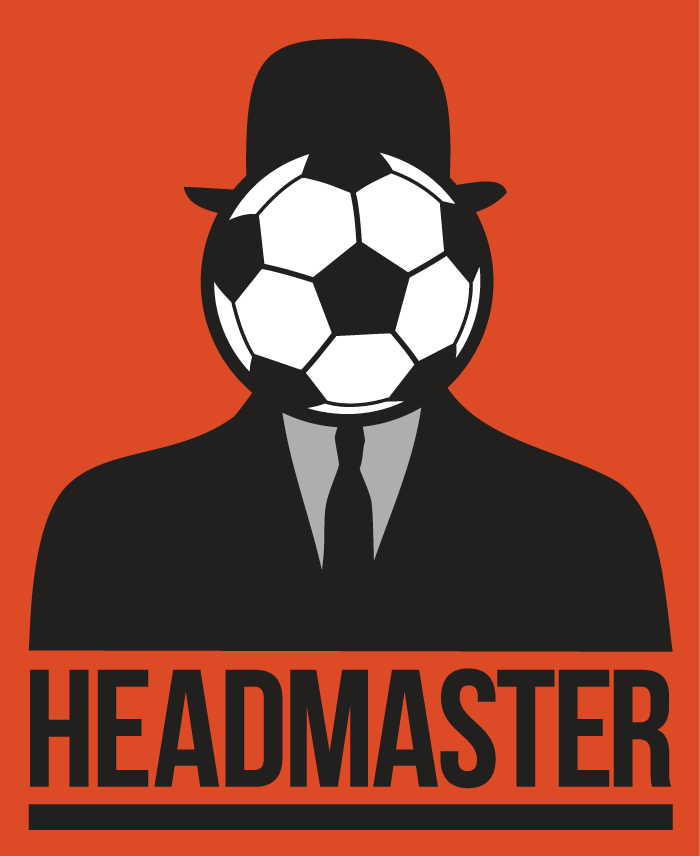

March 20, 2020 — Headmaster: The Lost Lessons was announced as the first ever Headmaster DLC. See this Press resources page for info and content.
August 30, 2017 — Headmaster released on Oculus Rift and HTC Vive/Steam. See this Press resources page for info and content.

Headmaster
A virtual reality game about escaping from prison by using your head.
Factsheet
- Developer
- Frame Interactive
- Release date
- PSVR: Oct. 13, 2016
PC: Aug. 30, 2017 - Platforms
- PlayStation®VR, Oculus Rift, Steam/HTC Vive
- Regular Price
- $19.99
- Website
- headmastergame.com
Description
As its name suggests, in Headmaster you head virtual soccer balls (and other things) with your actual head. Combining intuitive physics gameplay with a darkly comedic world, this bizarre love child of Portal and Wii Sports has been giving Playstation VR owners fits of joy since it launched alongside the hardware in October.
In the world of Headmaster. you are a professional soccer player who had a bad season, so your club sent you to The Football Improvement Centre (FIC), which is not a prison. There you learn The Proper Heading Motion™ and enthusiastically participate in your re-education by passing lessons and exams until you graduate. Graduation is mandatory. You’re lucky to call this world class facility home!
Your task is to conquer nearly 50 levels of unique challenges using only your head. Direct soccer balls, explosive balls, knife balls, beach balls, and even garbage bags to satisfy the curriculum and earn enough stars to take your exams. Pass the final exam and you can rejoin your club!
In reality the FIC is a shambles. It’s in a dire financial state due to years of mismanagement by its nameless administrator (the headmaster?), who you only know by hearing his tinny voice over a loudspeaker. His spendthrift habits and questionable safety record have left the business one misstep away from insolvency. The only thing keeping it afloat is the tireless work of its lone employee, Carl. Carl sticks around not for his meager paycheck, but for the love of building lessons, for the challenge of doing more with less, and for his belief that fun, not fear, is what helps players improve.
History
Headmaster was originally conceived by Ben Throop at The Boston VR Bender game jam put on by the Boston VR Meetup, Owlchemy Labs, Valve, and Unity in June 2014. A demo of the game debuted as a last minute addition to the Show and Tell section of Indiecade East in New York in February 2015. While there, Ben met Nick Suttner (then of Sony, now of Oculus), which led to a follow-up meeting at GDC. After a successful pitch, Frame Interactive was founded and the game was signed as a Sony exclusive for PSVR. In the year-and-a-half that followed, Frame added key team members Dan Bernard, Eric Colossal, Damon Pidhajecky, and James Heinichen as they built the demo up into a fully featured launch title. Sony has shown Headmaster around the world as an ambassador title for PlayStation®VR, including a competition at the UEFA Champions League Final in Milan, Italy, and then the following year in Cardiff, Wales. It also received a Finalist nomination for Best VR Experience at the 2015 Unity Awards.
Highlights/Features
- A fun and unique heading mechanic only possible in Virtual Reality.
- Approachable for non-gamers as a great introduction to VR which requires no controller for gameplay. But make no mistake, this is no “casual” game. Your skills and expectations will constantly be challenged!
- An Intriguing story mode where you try to escape... er, graduate from The Football Improvement Centre and return to your club. Meet the “World Class Staff” and discover what a knife ball is.
- PARTY MODE where you take turns in the headset to compete with friends for a high score.
- The strange love child of Portal and Wii Sports.


Selected Articles
- VR’s First Big Hit Could Be This Simple Soccer Game | Wired.com | 7.20.2015
- Playstation VR Gameplay - The Headmaster Challenge | Playstation Access | 6.2.2016
- Why the Physics of Stuff Flying at Your Face is so Compelling | VoiceofVR.com | 6.13.2016
- Every PlayStation VR Game We've Played So Far, Ranked | VRHeads.com | 9.21.2016
Additional Links
- Announcing Headmaster for PS4 | blog.playstation.com | 6.17.2015
- Try PlayStation VR at Best Buy and Gamestop | Mashable.com | 6.16.2016
- PlayStation VR demo disc contains eight games | Eurogamer.net | 7.9.2016
- PlayStation VR Demo Disc Has 18 Games in North America | Gamespot.com | 9.12.2016
About fRAME INTERACTIVE
Frame Interactive Studio LLC was formed in 2015 specializing in independent games and virtual reality. Frame has a remote team in the United States with people in Burlington, VT, Portland, OR, and Olympia, WA. See more about the team at frameinteractive.com/team
Headmaster Team
Headmaster was originally conceived and prototyped by Ben Throop. Once the project was funded by Sony in mid 2015, Ben built up a team that has taken Headmaster from a playable concept to a fully polished (and ridiculous) digital retail game on PS VR.
Ben Throop
After spending 15 years in AAA at Sony working on the Syphon Filter franchise, and then at Activision as a Game Director, Ben struck out on his own to in 2014. He made a prototype of heading soccer balls in VR and then two years later he's formed Frame Interactive and launched Headmaster on Playstation VR. Ben is a game maker who builds code, art, design, sounds, and words. On top directing and building the game, he also runs the business. Ben is now very tired and so is his family. He lives in Burlington, Vermont with his incredibly supportive wife, 7 year old son, and 2 year old daughter.
Damon Pidhajecky
Damon has been at the forefront of emerging game technologies for the past 13 years. His game development journey started by creating some of the first 3D web games for the Syfy Channel. As one of the early employees at Zynga, he delved into social games as a software architect to lead front end development teams at their virtual worlds studio. In 2015, he independently created the GearVR game, Snow Strike, which was featured in Samsung’s nationwide holiday commercial this past Christmas. Damon has a deep passion for the arts and believes virtual reality to be the ultimate medium for artists. dpid.co
Eric Feurstein
Eric is an artist and game designer living in upstate New York. He's worked on games for the Gameboy Advance, the Nintendo DS, the Nintendo 3DS, Xbox 360, Wii, cell phones, iPhones, tablets... Basically, if it has a screen, he made a game for it. When not working on games he draws his all ages comic Rutabaga: The Adventure Chef which can be read online here: http://RutabagaComic.com
James Heinichen
Production and Quality Assurance
Dan Bernard
A 17-year industry all-arounder, Dan was Technical Art Director on the Fight Night franchise for Electronic Arts Chicago and for Tony Hawk skateboarding projects at Robomodo. More recently he started Stovepipe Interactive to do mobile work, partnering with Activision to port Skylanders Cloud Patrol to Android and Kindle, and helping restructure the monetization systems for their Pitfall iOS product. Dan lives in Chicago with his wife and two daughters, and likes to make his own Chicago Style hot dogs. No, not the actual hot dogs. Nobody does that.
Bryan Cohan
An 8 year game development veteran, Bryan has experience in numerous game development disciplines including design, art, and coding. He has worked on the Skylanders and Guitar Hero franchises for Activision, and more recently has shifted focus to development of virtual-reality. His VR game 'Alone', an interactive game-within-a-game experience was featured as an Oculus Rift Game Jam finalist. When he's not building virtual worlds, he enjoys spending his time in the real world hiking North Carolina's beautiful national parks. www.instagram.com/oakcityartist/
Nick Kallman
An audio wizard, Nick was a Sound Designer and Composer on the Rock Band and Dance Central franchises as well as numerous independent games like Grim Dawn and Chariot. In early 2014 he founded SkewSound, an audio production house, with three like-minded audio professionals. A graduate of the Berklee College of Music in Boston, he transplanted to Portland, with his partner and crazy pup in 2013.